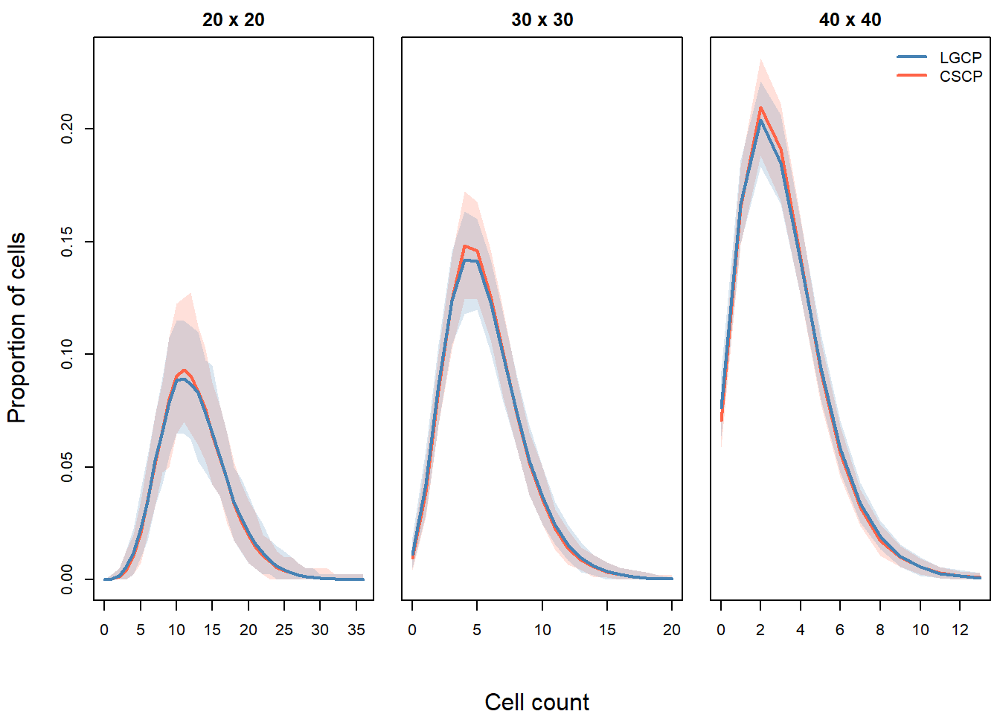
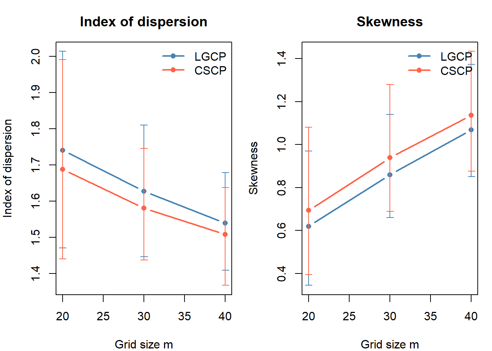
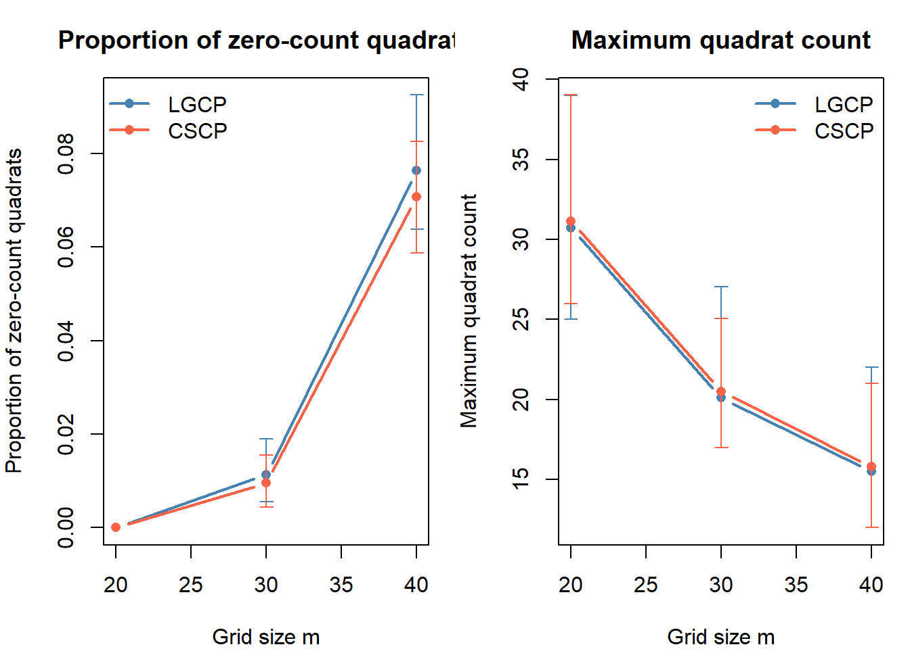
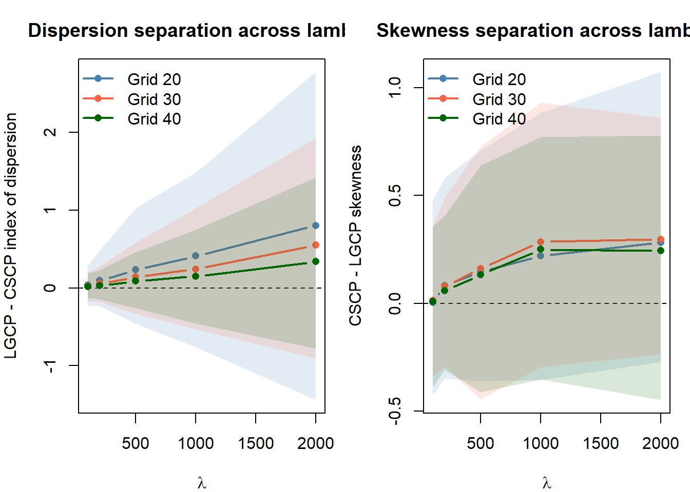
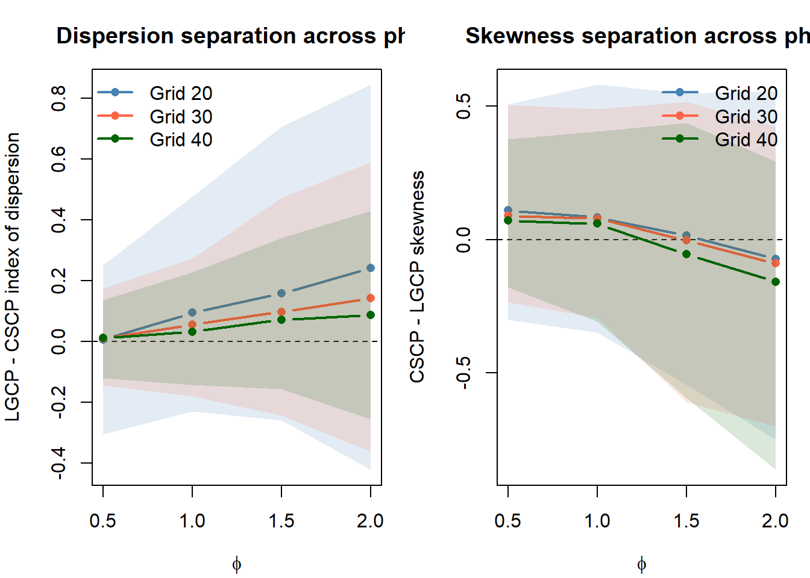
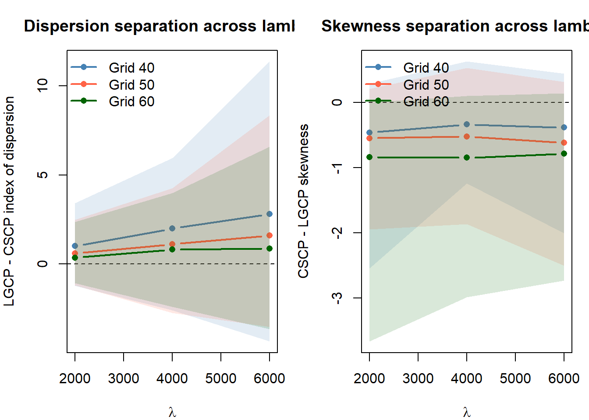

W <- spatstat.geom::owin(c(0, 5), c(0, 5))
quad_study <- run_quadrat_count_study(
W = W,
lambda = 200,
phi = 1,
s_cscp = 0.05,
grids = c(20, 30, 40),
n_sims = 200,
seed = 123
)46 Quadrats
46.1 Motivation
The previous section showed that kernel reconstruction is not an effective way to recover the marginal differences between LGCP and CSCP models. Although the two models have different theoretical marginal distributions for the latent intensity field, these differences are heavily blurred once we:
- observe only a Poisson realisation of the process,
- reconstruct the intensity surface by kernel smoothing, and
- treat the resulting pixel values as a proxy sample from the marginal.
This suggests that estimating the entire latent surface may be an unnecessarily indirect route.
Instead, we now take a more direct approach based on quantities that are observable from the point pattern itself.
46.2 Why quadrat counts?
For a small region \(B \subseteq W\), the number of observed points in \(B\) satisfies
\[ N(B) \mid \Lambda \sim \text{Poisson}\left(\int_B \Lambda(u)\,du\right). \]
Thus, a quadrat count is a direct noisy measurement of the local average intensity over that region.
This is important for two reasons.
First, quadrat counts are obtained directly from the observed point pattern, without first reconstructing the full two-dimensional intensity surface.
Second, if LGCP and CSCP models differ in how often the latent intensity is very small or very large, then these differences may also appear in the distribution of counts across small quadrats. In other words, quadrat counts do not recover the pointwise marginal distribution of \(\Lambda(u)\) exactly, but may retain aspects of the lower-tail and upper-tail behaviour of the latent intensity distribution in a more directly observable form.
46.3 Aim of this section
The goal for this section is not to estimate the marginal density of \(\Lambda(u)\) itself. Rather, it is to determine whether simple summaries of quadrat counts can capture enough of the local intensity behaviour to distinguish the two models in practice.
If these summaries still fail to separate LGCP and CSCP models, this would provide stronger evidence that the marginal differences, while present in theory, are difficult to exploit from a single observed point pattern.
46.4 Constructing empirical summaries from quadrat counts
Let \(X\) be a point pattern observed in a bounded window \(W \subset \mathbb{R}^2\).
Choose a rectangular grid of \(m \times m\) equal-area cells \(\{B_j\}_{j=1}^J\) (typically \(J = m^2\)) covering \(W\) (or a bounding box for \(W\)).
Define cell counts
\[ N_j = \#\{x_i\in X : x_i \in B_j\} \]
These counts can be interpreted as noisy measurements of the local average intensity over each quadrat.
A natural idea is therefore to treat the collection \(\{N_1, \dots, N_J\}\) as a sample from some unknown distribution reflecting local intensity behaviour, and to study its empirical distribution.
46.5 Summaries considered
In particular, this section will consider the following summaries of the counts.
Primary:
Histograms of quadrat counts
These provide the most direct view of the empirical count distribution across cells. If the two models differ in how often they generate unusually small, moderate, or large local intensities, this should appear as differences in the shape of the quadrat count distribution.Index of dispersion across quadrats
The index of dispersion, defined as the sample variance divided by the sample mean, gives a simple measure of how variable the counts are across space. This may reveal whether one model produces systematically more between-cell variation than the other.Skewness across quadrats
Skewness measures the asymmetry of the count distribution. This is useful because the models may differ not only in overall variability, but also in how strongly they generate occasional high-count cells relative to the bulk of the distribution.
Secondary:
Proportion of zero-count quadrats
This targets the lower tail of the count distribution. If one model produces local regions of very low intensity more frequently, this may translate into a higher proportion of empty cells.Maximum count among quadrats
This targets the upper tail of the count distribution. If one model more frequently produces extreme local intensity spikes, this may be reflected in a larger maximum quadrat count.
46.6 Study procedure
For fixed \((\lambda, \phi, s)\), the study proceeds as follows.
Match the LGCP scale parameter to the CSCP scale parameter using the best-matching value of \(s_{\text{LGCP}}\) for the chosen \(s_{\text{CSCP}}\).
Simulate one LGCP pattern and one CSCP pattern under the matched parameter setting.
For each chosen grid resolution, compute the quadrat counts over the window.
From these counts, compute the summaries listed above.
Repeat over many Monte Carlo replicates.
Compare the empirical distributions of these summaries between the two models.
Throughout the rest of this section, this basic procedure remains the same. Only the parameter setting in Step 1 is varied, so that we can assess how the degree of separation changes with \(\lambda\) and \(\phi\).
Note
You can see the code used here
Example of the procedure


46.7 Initial investigation
We begin by investigating whether quadrat summaries reveal any systematic differences between the LGCP and CSCP.
As per the description above, we will be running the study with the following settings to begin:
\(\lambda = 200\)
\(\phi = 1\)
\(s_{\text{CSCP}} = 0.05\) (best-matching LGCP has \(s_{\text{LGCP}} = 0.0312\))
\(n_\text{sims} = 200\)
Grid sizes of \(\{10, 20, 30\}\)
\(W = [0, 5] \times [0, 5]\)
Running the study:
Below we plot the mean proportion of cells for each cell count, along side the central 95% quantile envelopes.

Observations:
As expected, the range of observed quadrat counts decreases as the grid is made finer. With smaller cells, each quadrat contains fewer points on average, so the count distribution shifts toward smaller values.
Across all three grid sizes, the two mean histograms are very similar, but the CSCP tends to place slightly more mass on a narrower band of moderate counts, while the LGCP appears slightly more spread out.
These differences are visible, but modest. The histogram comparison suggests that quadrat counts do retain some information about the underlying model.

Observations:
The mean index of dispersion is consistently slightly lower for the CSCP than for the LGCP across all three grid sizes. This suggests that, at this setting, LGCP quadrat counts are marginally more variable across cells.
The mean skewness is consistently slightly higher for the CSCP than for the LGCP. This suggests that the CSCP count distribution is somewhat more asymmetric, even though its overall dispersion is slightly smaller.
In both cases, however, the Monte Carlo envelopes overlap heavily. So while these summaries show a consistent directional difference, the effect size is small relative to simulation-to-simulation variability.
Looking at the max counts, and proportion of zero counts:

Observations:
The proportion of zero-count quadrats is almost identical between the two models at all three grid sizes. In particular, both models produce essentially no empty cells on the \(20 \times 20\) grid, and then show very similar increases in zero-count cells as the grid is refined.
The mean maximum quadrat count is also extremely similar between the two models. At each grid size, the CSCP is only very slightly larger on average, but the difference is negligible relative to the overall scale of the maxima.
Taken together, these two tail-focused summaries do not appear to provide any practically useful separation here. Both the lower-tail behaviour (via the proportion of zeros) and the upper-tail behaviour (via the maximum count) are almost indistinguishable once viewed through quadrat counts.
46.8 Varying lambda
We now investigate how the separation between the two models changes as the mean intensity \(\lambda\) varies, while holding \(\phi\) and \(s_{\text{CSCP}}\) fixed. This is important because quadrat counts are affected not only by the latent intensity model, but also by the overall number of observed points. At low values of \(\lambda\), quadrat counts are sparse and noisy, whereas at higher values the counts may more faithfully reflect differences in the underlying random intensity field.
Throughout this section, we fix
- \(\phi = 1\)
- \(s_{\text{CSCP}} = 0.05\)
- \(W = [0,5]\times[0,5]\)
- Grid sizes \(\{20,30,40\}\)
For each value of \(\lambda\), we compute the quadrat summaries over many Monte Carlo replicates, then examine the mean difference between the two models, together with central 95% Monte Carlo bands.

Observations:
For both summaries, the direction of the difference is broadly consistent with the initial investigation. The LGCP tends to have a slightly larger index of dispersion, while the CSCP tends to have a slightly larger skewness.
The magnitude of the difference generally increases with \(\lambda\) for both summaries. This effect is most pronounced for the index of dispersion on the coarser grids (e.g. \(20 \times 20\)), where the mean difference grows from near zero at \(\lambda = 100\) to around \(0.8\) at \(\lambda = 2000\).
This pattern is consistent with the idea that larger values of \(\lambda\) reduce sampling noise in the quadrat counts, allowing underlying differences in the latent intensity field to become more visible.
However, the strength of this increase depends strongly on the grid resolution. For finer grids (e.g. \(40 \times 40\)), the separation remains much weaker, even at large values of \(\lambda\).
Most importantly, the 95% Monte Carlo intervals for both summaries overlap zero across all values of \(\lambda\) and all grid sizes. In many cases, the intervals are wide relative to the mean difference, particularly at larger \(\lambda\), where variability in extreme counts increases.
Overall, while increasing \(\lambda\) leads to some strengthening of the differences between the models, these differences remain small relative to Monte Carlo variability.
46.8.1 Comments
TBA
46.9 Varying phi

46.10 Comments
46.11 Conclusion?
46.12 Bonus: How large do we need lambda, to confidently distinguish?
W <- spatstat.geom::owin(c(0, 5), c(0, 5))
lambda_scan <- run_quadrat_lambda_scan(
W = W,
lambda_vals = c(2000, 4000, 6000),
phi = 2,
s_cscp = 0.05,
grids = c(40, 50, 60),
n_sims = 100,
seed = 123
)plot_lambda_scan(lambda_scan)
46.7.1 Comments on the initial investigation
Overall, these initial results suggest that quadrat counts do preserve a small amount of model-specific information. In particular, the histogram, index of dispersion, and skewness all show weak but directionally consistent differences between the LGCP and CSCP at this parameter setting.
However, the separation is modest, and the overlap across Monte Carlo replicates is substantial. The secondary summaries are even less encouraging: the proportion of zero-count quadrats and the maximum quadrat count are almost identical between the two models.
Thus, the main conclusion from this initial investigation is that quadrat-based summaries may contain some signal, but that signal is weak. This motivates examining whether the strength and direction of the separation changes more systematically as \(\lambda\) and \(\phi\) vary.